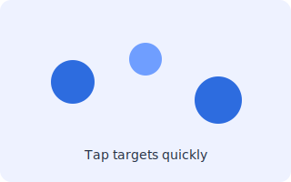
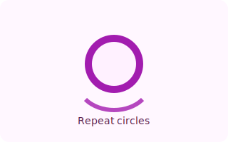
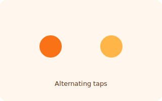

Early signs of Parkinson’s often appear as small changes in hand movement and control. This platform offers a simple, software-based way to observe and visualize motor patterns. Subtle motor changes shouldn’t go unnoticed.
Why This Matters
Parkinson’s disease often begins with changes that are easy to overlook — mild tremors, reduced control, or slower movement. Timely awareness can help individuals seek medical guidance earlier and better understand changes in motor function over time.
Our Approach
We provide a non-invasive digital assessment using guided motor interaction tests.
No hardware or wearables required
Works on standard devices
Minimal effort, no manual data entry
Movement patterns are automatically analyzed and visualized to highlight potential irregularities
Line Tracing
Trace the line accurately and smoothly

Target Touch
Tap appearing targets quickly and accurately

Timed Repetition
Repeated circles measure consistency and speed

Finger Tapping
Alternating taps measure speed and rhythm
Who It’s For
Individuals noticing hand tremors or motor changes
Caregivers supporting neurological health
Students and researchers exploring digital health tools
Disclaimer:
This tool is intended for screening and motor symptom monitoring only. It is not a medical device and does not provide a clinical diagnosis. Please consult a qualified healthcare professional for medical advice.
Check for Tremor
Choose a short test below. Each test focuses on a different clinical sign (tremor, bradykinesia, stability, reaction). Results are summarized and can be saved.
Trace Test
Trace the swirl in the canvas below. Accuracy is used to estimate tremor severity.
Ready
Finger Tapping Test
Tap the left and right targets alternately as quickly and consistently as you can for 15 seconds.
Ready
Hold-Still (Postural)
Place and hold your finger/mouse on the dot for 15 seconds. Keep it steady on the dot.
Ready
Line Tracing Test
Trace the line below as precisely as possible.
Target Touch
Tap the targets that appear as fast as you can. 15 trials.
Ready
Timed Repetition Test
Draw circles repeatedly for 20 seconds. Try to maintain shape and speed.